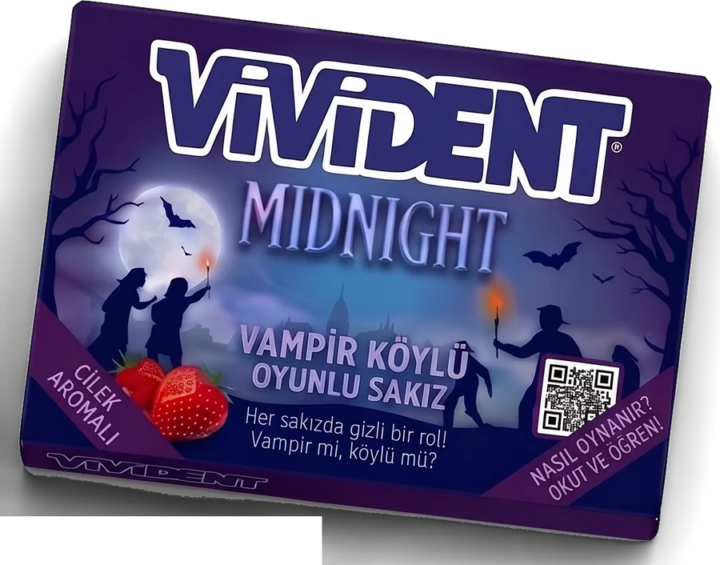
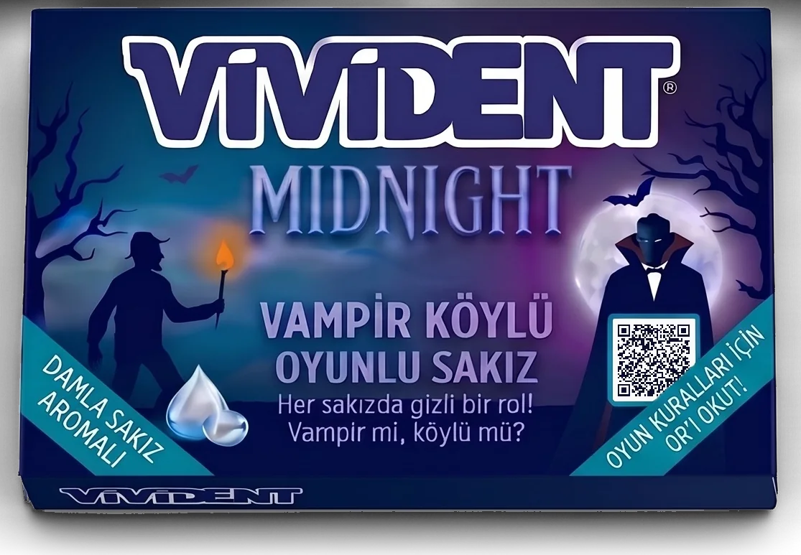

Sakızını çek
Kutudaki sakızların hepsi dışarıdan aynı. Rolün, kâğıdın iç yüzünde yazıyor. Birini seç ve aç.
Oyun bir dakikada kurulur
- Anlatıcıyı seçin
Oklu bölmedeki anlatıcı sakızını isteyen gönüllü alır. Gönüllü çıkmazsa anlatıcıyı kurayla belirleyin.
- Anlatıcı rolleri hazırlar
Anlatıcı sakızların kâğıt ucunu gizlice aralayıp rollere bakar. Kişi sayısına göre fazla sakızları ayırır, kalanları karıştırır. Herkes bir tane çeker.
- Bak, katla, cebine koy
Kâğıdın içine kimseye göstermeden bak. Katla ve cebine koy.
- Hep birlikte ağza
Anlatıcı “üç” deyince herkes sakızını aynı anda ağzına atar. Gece başlar.
Kaç kişisiniz?
Anlatıcı dahil kaç kişi oynayacağını seçin. Her pakette 10 sakız var: 1 anlatıcı, 9 rol.
Kâğıdında ne yazıyor?
İki takım var: vampirler ve köylüler. Doktor köylülerin yanında. Kâğıtlara dokun, aç.
- Vampirler ilk gece birbirini tanır.
- Gece sessizce anlaşıp tek kişi seçerler.
- Kendini oyun boyunca yalnızca bir kez koruyabilir.
- Aynı kişiyi üst üste iki gece koruyamaz.
Köye yeni yüzler geliyor Yakında
Yeni roller yakında, yeni paketlerde…
AnlatıcıOklu bölmedeki anlatıcı sakızını isteyen gönüllü alır; gönüllü çıkmazsa kurayla belirlenir. Anlatıcı oynamaz, oyunu yönetir. Oyundan önce rolleri kişi sayısına göre o hazırlar; geceleri kimin ne yaptığını da yalnızca o bilir.
Gece
Herkes gözlerini kapatır, sakızlar sessizce çiğnenir.
- Köy uyusunHerkes başını öne eğer.
- Vampirler uyanırSessizce bir kişiyi seçer. İlk gece birbirlerini de tanırlar.
- Doktor uyanırKorumak istediği kişiyi işaret eder.
- Köy uyanırAnlatıcı gece ne olduğunu açıklar.
Gündüz
Köy meydanda toplanır. Herkes konuşur, herkes şüphelidir.
- TartışmaŞüphelerini söyle, kendini savun, blöf yap.
- OylamaHerkes sırayla köyden atılmasını istediği kişiyi söyler.
- AsılmaEn çok oyu alan asılır. Eşitlikte kimse asılmaz.
Ölenin rolü bilinmez.
Gün doğduğunda kim ayakta?
Tüm vampirler gündüz oylamalarıyla asıldığında. Bunu anlatıcı açıklar.
Hayattaki vampir sayısı, hayattaki köylü takımı sayısına eşit olduğunda.
Anlatıcı rehberi
Telefonu eline al. Her adımda ne söyleyeceğin ekranda yazar, istersen telefon sesli okur. Tartışma süresini de tutar.
Üç aroma, tek gece
Her pakette tek aroma ve 10 sakız: 9 gizli rollü sakız, oklu bölmede bir anlatıcı sakızı. Tek paket 10 kişiye kadar yeter, daha kalabalıksanız bir paket daha alın.

